Cada fonte que alimenta o workspace, quando foi atualizada e se está em dia. Fonte que ainda não entra aparece como "não ligada", com o que destrava. Nada aqui é preenchido com estimativa.
| Fonte | Atualiza | Última atualização | Situação |
|---|
Aqui o workspace deixa de só mostrar o que aconteceu. Ele aponta desvios e oportunidades, cada um com uma ação, um dono e um card, e questiona as decisões do plano. Leitura feita em 27/11/2026 a partir do caderno, dos cards do GitHub e do que ficou registrado nas sessões de trabalho.
Ainda não dá pra prever como dezembro fecha: nenhuma fonte de resultado entra sozinha no workspace. A única referência real de uma inauguração só delivery é a Temakeria Araruama (out/26), e é dela que saem as metas de São Gonçalo.
Fonte: report do Celso de 22/10 (cs-temakeria-universitaria#234), citado na seção 02 do caderno. Divisão usada: 25% topo · 40% meio · 35% fundo.
| Meta | O que falta |
|---|
A cadeia que liga o que o Ogro publica ao pedido que entra. Verde é medido, amarelo é parcial, tracejado ainda não é medido. Cada elo que falta mostra o que o destrava.
| Dependência | Risco | Próximo passo |
|---|
Segue o molde do painel do Emeric: os mesmos modos e abas. Por enquanto as camadas de coleta automática não existem no Ogro, então a página é um retrato que o Victor republica.
atualizar.py. Falta: Postiz, Meta Ads, planilha da LP e pedidosdados.json com as demandas e a data de geraçãoInstagram, Meta Ads e pedidos ainda não entram sozinhos. Enquanto isso, esta aba mostra o que já está decidido e medido: a verba aprovada, o tracking do lançamento e o que cada fonte precisa pra ligar.
Meta Ads, conta CA7, aprovado pelo Victor em 26/11. Os tetos não podem ser passados. #03 e #05 ficaram em verba diária: a Meta não troca diário por total em campanha já publicada.
| Evento | Onde | Situação |
|---|
Card #45: Lead até 25/11 e Purchase até 04/12. O GTM do site está na versão 6 (a 5 quebra o site).
| Bloco | Período | Campanha · conjunto | Público ou objetivo | Verba |
|---|
Tudo em rascunho e sem cartão até a última leitura do card #55. Anúncio de engajamento usa post de sucesso que já existe no @ogro.steaks. Peça sem o Jimmy ou sem burger do Ogro não vira anúncio.
Cards do repositório cs-ogro-steaks no GitHub, com o status do board S7. "Dias sem movimento" conta desde a última atualização do card.
| Situação | Cards |
|---|
Lei 3: toda tarefa vira issue no board. Card "fora do board" ainda precisa entrar no projeto S7.
| Card | Demanda | Frente | Situação | Com quem | Dias sem movimento |
|---|
Metas de dezembro de 2026 e do 1º trimestre de 2027. Onde existe dado real, a base é ele. Onde não existe, a base é a Araruama ou a regra combinada, e isso fica escrito. Proposta do Victor para validar com a Manu e o Matheus.
Status: no alvo quando já bate a meta; regra quando é compromisso de processo, conferido à mão; "sem dado" quando a fonte ainda não alimenta o workspace.
Como as metas viram trabalho: cada ação é um card do GitHub com dono, prazo e a meta que move. A situação vem do board na hora em que o dados.json é gerado. Clique numa meta para ver como ela está.
Cada mês tem uma verdade humana e uma função no funil: dezembro capta, janeiro converte, fevereiro faz voltar. Sem Papai Noel e sem gorrinho. O Ogro entra como a recompensa de quem fechou o dia.
A Bárbara avisou em 13/11 que os quadros aprovados na apresentação de set/26 valem até fevereiro. Os episódios novos saem dentro deles (card #44).
| Quadro | Ritmo | O que é |
|---|
Avaliação de 27/11/2026: os métodos que seguimos, lidos contra as metas e contra o que já aconteceu na conta. Nota de 1 (frágil) a 5 (sólido).
Comerciais, de cultura pop e da operação. Cultura pop sai 1 dia antes da estreia (post, TikTok e WhatsApp), exceto Duna (sábado, 19/12). A antecedência é quantos dias antes a peça precisa estar pronta.
Relevância de 0 a 100 = encaixe na marca (35%) + momento (25%) + alcance potencial (25%) + facilidade de produzir (15%), cada nota de 1 a 5. Referência visual clara, sem logo, personagem, fonte ou música de terceiro.
| Trend | Tipo | Como o Ogro entra | Relevância | Vale até |
|---|
| Quando | Pauta | Formato | Maslow | Indicador | Meta |
|---|
Dezembro é a base: as metas por peça de janeiro e fevereiro saem do Insights de dezembro, sem chute agora (seção 08 do caderno).
Revisão do Drive de 25/11 (quadros a cada 0,5 s) e artes estáticas de 26/11. O nome do anúncio na Meta é o nome do arquivo.
| Dia | O quê | Canal | Quem |
|---|
| Peça | Formato | O que é | Depende de | Quem |
|---|
| Peça | Para | Versão | Situação | Card |
|---|
Todo vídeo é revisado inteiro antes de subir (quadros a cada 0,5 s e comparação com a foto oficial). Burger fora do cardápio vai pros reprovados.
O guia que toda peça segue, a partir do manual da Bárbara e do brand-ogro.
| Papel | Fonte | Regra |
|---|
O que está esperando o aval de alguém, com o card onde a resposta fica registrada. Responda Sim ou Não com um comentário direto no card: aqui não grava nada.
Critérios das regras de marca e do que já deu errado. trava reprova a peça. ajuste volta com correção. A marcação fica só no seu navegador.